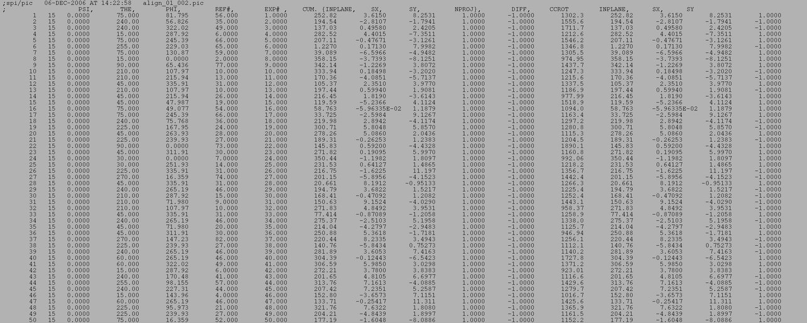
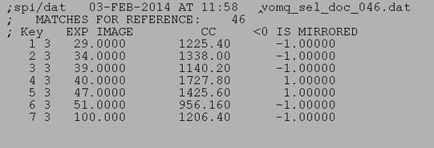
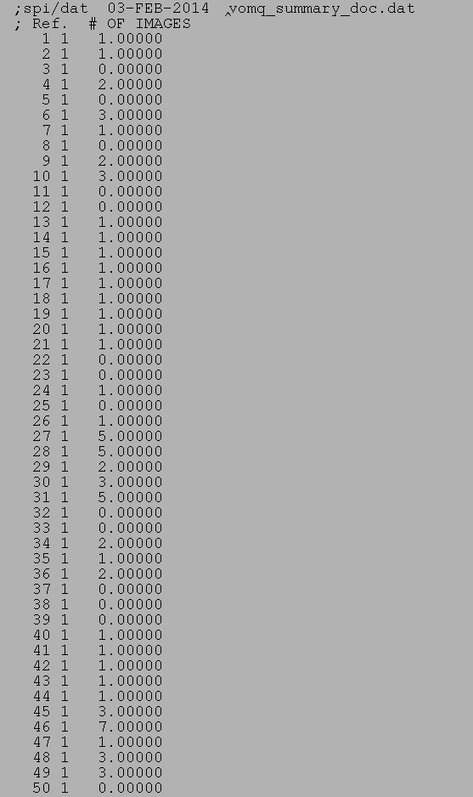

| .OPERATION: | VO MQ | ; Vector Operation - create selection files from 'AP' output |
| .CCC THRESHOLD: | 0 | ; List all |
| .ALIGNMENT DOC FILE : | sav_align_doc | ; Alignment doc file (input) |
| .NUMBER OF REFERENCES USED: | 83 | ; 83 References used |
| .TEMPLATE FOR REFERENCE SELECTION DOC FILES: | vomq_sel_doc_*** | ; Selection file template (output) |
| .REFERENCE SUMMARY OUTPUT FILE: | vomq_summary_doc | ; Summary file (output) |
| ALIGNMENT DOC FILE INPUT (Truncated) | |
|---|---|
|  | |
| sav_align_doc |
| REFERENCE SELECTION DOC FILE (Sample file) |
|---|
|  |
| vomq_sel_doc_046 |
| SUMMARY DOC FILE (Truncated) |
|---|
|  |
| vomq_summary_doc |